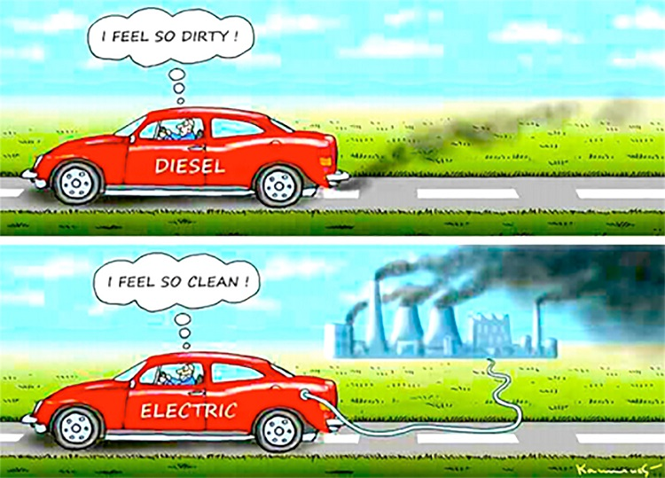

Extra curricular activities
Aside from academics, I am passionate about sports, which is an important element of my education. I frequently participate in extracurricular activities. I am a CAPTAIN for my college CRICKET CLUB and have won numerous awards at the yearly sports fests. Aside from outdoor activities, I am also a TABLE TENNIS player. Sports, I believe, are the only things that can significantly modify my physical personality while simultaneously allowing me to relax.
Besides sports, I am also passionate about cultural events. My college has an annual festival called IVARNA, which is held once a year. In 2018 and 2019, I participated in the dance at the event, and in 2021-22, I volunteered. I've gained some excellent leadership and management skills as a result of this, which will benefit me in the future.
IS CYBER SECURITY A THREAT IN FUTURE?
Since the first computer virus was created in 1971, cybersecurity has existed.
That was the "creeper" virus, a benign software that replicated and moved from one machine to another. Every day, though, new malware is generated by "threat actors" who try to develop new tools for evil objectives.
In what has become a cat-and-mouse game, cybersecurity specialists try to stop them, each trying to outperform the other.
The sophistication of all sides in the game has improved over the decades.
Learn more

ARE ELECTRIC VEHICLES MORE DANGEROUS THAN GASOLINE-POWERED VEHICLES TO THE ECO SYSTEM?
That's correct. According to a paper released by the National Research Council, the energy required to produce electricity and batteries – from gathering raw materials to burning coal to generate power – makes these low or zero-emission cars more costly to human health. Damage to grain crops and timber yields, as well as enjoyment, is impacted to a lesser extent.
Learn more
{kind=link}